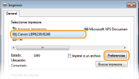
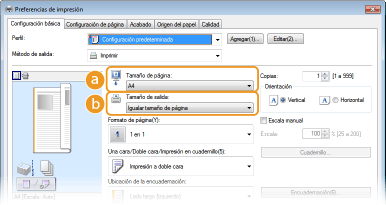
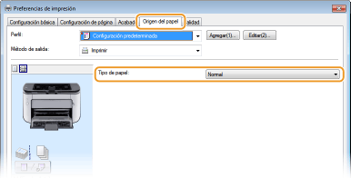
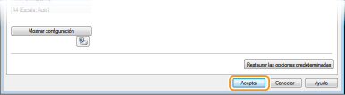
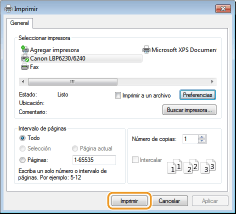
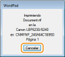

0KXF-011
Esta sección explica cómo imprimir un documento en su ordenador utilizando el controlador de impresora.

1
Abra un documento en una aplicación y visualice el cuadro de diálogo de impresión.
El método para mostrar el cuadro de diálogo de impresión varía según la aplicación. Para obtener más información, consulte el manual de instrucciones de la aplicación que esté utilizando.
2
Seleccione este equipo y haga clic en [Preferencias] o [Propiedades].

La pantalla puede variar en función de la aplicación que utilice.
3
Establezca el tamaño de papel.

 [Tamaño de página]
[Tamaño de página]Seleccione el tamaño que utilizó al crear el documento en la aplicación.
 [Tamaño de salida]
[Tamaño de salida]Seleccione el tamaño de papel que debe utilizarse en la impresión actual. Si selecciona un tamaño distinto del [Tamaño de página], el controlador de impresora ampliará o reducirá automáticamente los datos para coincidir con el [Tamaño de salida]. Ampliación o reducción
4
En la pestaña [Origen del papel], seleccione el tipo de papel.
Establezca [Tipo de papel] conforme al tipo de papel que va a utilizarse en la impresión. Tipo de papel y opciones de papel en el controlador de impresora

5
Establezca otras preferencias de impresión según corresponda. Varias opciones de impresión

Puede registrar las opciones especificadas en este paso como un "perfil" y utilizarlo cuando imprima. Así no tendrá que especificar las mismas opciones cada vez que imprima. Registro de combinaciones de las opciones de impresión que se utilizan con mayor frecuencia
6
Haga clic en [Aceptar].

7
Haga clic en [Imprimir] o en [Aceptar].

 |
Se iniciará la impresión. En algunas aplicaciones, aparecerá una pantalla como la que se muestra a continuación.
 Si aparece una pantalla como la anterior, puede cancelar la impresión haciendo clic en [Cancelar]. Si la pantalla desaparece o no aparece en absoluto, puede cancelar la impresión de otros modos. Cancelación de trabajos de impresión
|
 |
|
Si se ensucia con el tóner de las hojas impresas o si el tóner se desprende de la página
Si utiliza papel con una superficie áspera o si el paño se ensucia con tóner, establezca [Tipo de papel] en [Rugoso 1] (de 16,0 a 23,9 lb Bond [de 60 a 90 g/m²]) o [Rugoso 2] (24,0 lb Bond a 60,3 lb Cover [de 91 a 163 g/m²]).
No toque las páginas impresas. No toque las hojas que acaban de imprimirse con los dedos ni con un paño. Podría mancharse los dedos o el paño y el tóner podría desprenderse de la página.
|
 |
|
Cuando imprima desde una aplicación Windows Store en Windows 8/Server 2012
Abra los accesos situados en la parte derecha de la pantalla y haga lo siguiente.
Windows 8/Server 2012
Pulse o haga clic en [Dispositivos] Windows 8.1/Server 2012 R2
Pulse o haga clic en [Dispositivos] Cuando imprima de este modo, solo podrá utilizar algunas opciones de impresión.
Si aparece el mensaje <La impresora tiene algún problema. Diríjase a su escritorio para solucionarlo.>, vuelva a su escritorio y siga las instrucciones del cuadro de diálogo que aparezca en la pantalla. Este mensaje aparece cuando hay que introducir el nombre de usuario antes de imprimir o cuando es necesario configurar alguna otra opción.
|